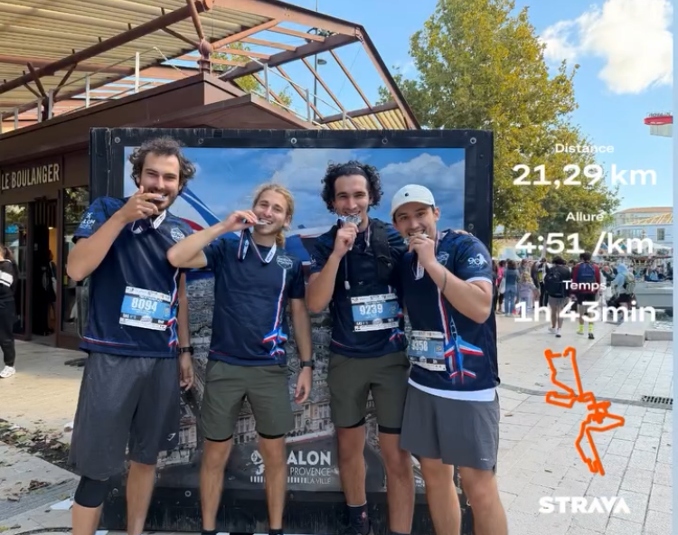
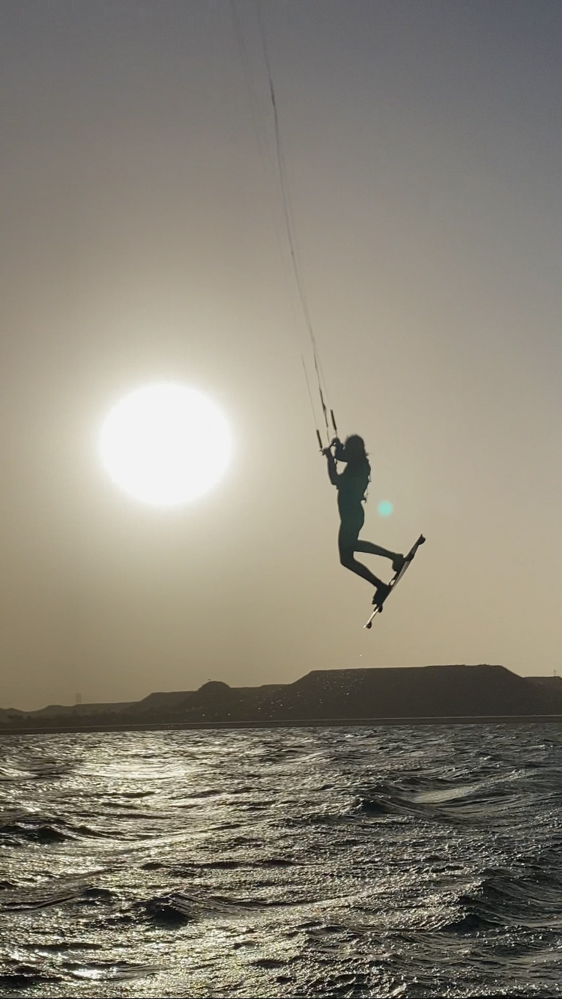
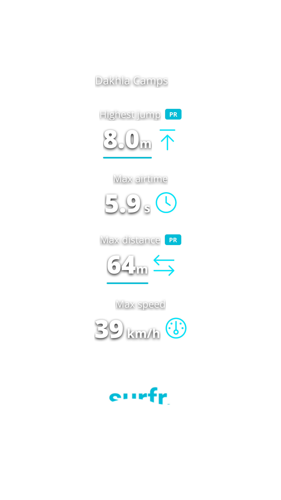
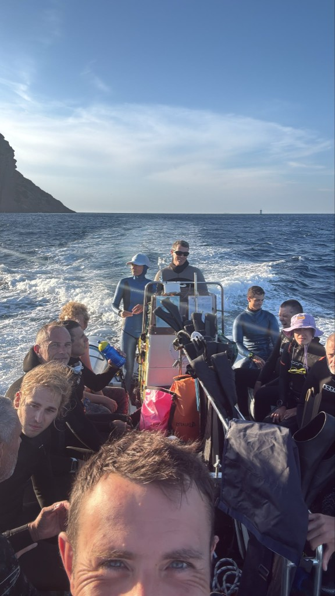
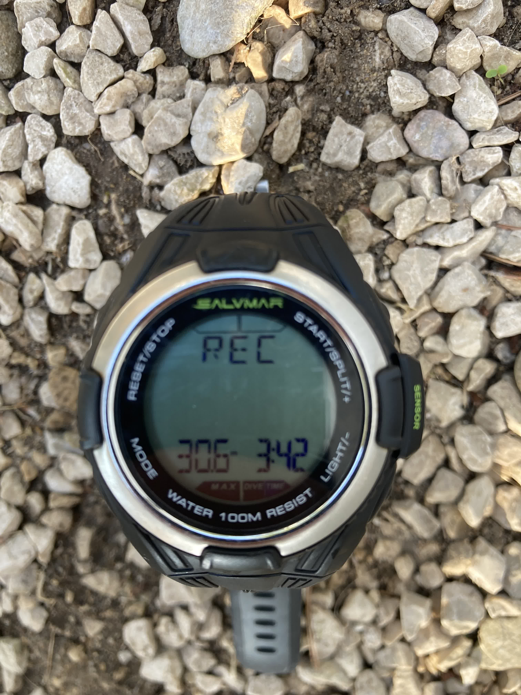

En dehors du code
Outside of code
Ce qui me façonne
What shapes me
Un ingénieur, c'est aussi une façon de voir le monde. Course à pied, kite, échecs et apnée nourrissent ici la même chose : concentration, régularité et goût du défi.
An engineer is also a way of seeing the world. Running, kite, chess, and freediving all feed the same things here: focus, consistency, and appetite for challenge.
Discipline & endurance
Discipline & endurance
Course à pied
Running
La course m'a appris plus sur la constance que n'importe quel projet : les progrès viennent lentement, mais ils viennent. Je cours régulièrement, surtout en endurance fondamentale — zones 2–3, entre 40 et 60 km par semaine selon la période.
Running taught me more about consistency than any project: progress comes slowly, but it comes. I run regularly, mostly base aerobic work — zones 2–3, 40 to 60 km a week depending on the period.
C'est d'ailleurs la course qui est à l'origine de BeatOnStep — l'idée m'est venue en cherchant un moyen de synchroniser ma musique à mon allure sans regarder mon téléphone. Un an plus tard, l'app est sur le Play Store et TestFlight.
Running is also what sparked BeatOnStep — the idea came while I was looking for a way to sync my music to my pace without touching my phone. A year later, the app is on the Play Store and TestFlight.
- Allure cible 10 km — 42–44 min
- 10 km target pace — 42–44 min
- Course repère — semi de Salon-de-Provence
- Reference race — Salon-de-Provence half marathon
- Terrain préféré — sentiers, routes de campagne
- Preferred terrain — trails, country roads
- Lien direct — BeatOnStep né de cette pratique
- Direct link — BeatOnStep born from this practice

Vent & engagement
Wind & commitment
Kite Surf
Kitesurf
Le kite, c’est le goût de la maîtrise dans un environnement qu’on ne contrôle pas et qui ne pardonne pas : lire le vent, anticiper, gérer l’engagement, puis accepter que la progression passe par beaucoup de répétition.
Kitesurf is about mastery in an environment you cannot control and that does not forgive much: read the wind, anticipate, manage commitment, then accept that progress comes through repetition.
- Record de hauteur — 8,0 m
- Highest jump — 8.0 m
- Spot — Dakhla Camps
- Spot — Dakhla Camps

Afficher record hauteur Show height record

Patience & calcul
Patience & calculation
Échecs
Chess
J’aime les échecs pour la même raison que j’aime coder : visualiser quelques coups à l’avance, accepter ses erreurs et progresser position après position.
I like chess for the same reason I like coding: seeing a few moves ahead, accepting mistakes, and improving one position at a time.
- Pic en rapide — 1200
- Blitz peak — 1200
- Objectif actuel — 1500
- Current goal — 1500
Calme & profondeur
Calm & depth
Apnée
Freediving
L’apnée, c’est une autre forme de précision : ralentir, rester lucide, économiser le geste, et garder le contrôle même quand l’environnement te pousse à faire l’inverse.
Freediving is another form of precision: slow down, stay lucid, economize movement, and stay in control even when the environment pushes you to do the opposite.
- Plongée mise en avant — 30 m
- Featured dive — 30 m

Afficher le record de profondeur Show depth record

Ouvrir la vidéo 30 m sur YouTube → Open the 30 m video on YouTube →